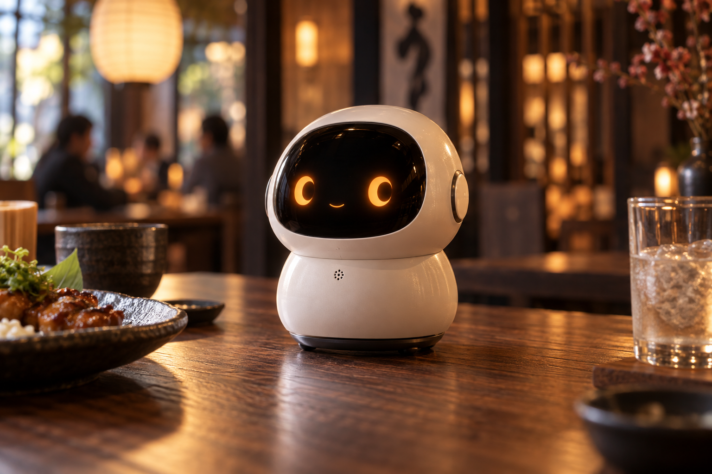

Help guests decide
Suggest dishes around party size, budget and taste, turning preferences into a list guests can review.
To explore: conversations that lead to ordersA little AI companion at the table, ready to help guests explore the menu.
We are preparing our first pilots and looking for restaurants to join us.

Two guests and one little robot, from sharing preferences to confirming a suggestion.
An animation of the intended experience, not live product footage. No order is placed.
Share your party size, budget and preferences.
From “What shall we have?” to “That sounds good.”
Start with what you’re in the mood for.
See a suggestion. The choice is always yours.
Scripted conversations illustrating the concept.
Dishes and prices are examples. No real orders are placed.
Start with your restaurant’s needs.
Explore where service could feel easier.
Suggest dishes around party size, budget and taste, turning preferences into a list guests can review.
To explore: conversations that lead to ordersAnswer menu and dining questions. Start with Japanese, then explore multilingual support for international guests.
To explore: staff handoffs and repeated questionsUse the table’s dining context to connect “one more” or “the same again” with a suggestion and confirmation.
To explore: reordering and order valueWe want guests to share what they need naturally, giving staff more time for personal service. The robot stays on the table and focuses on conversation; it does not move or deliver food.
Planned experience · To be tested through prototypes and pilots
No need to commit to an installation.
Tell us what you would like to improve.
Indecisive guests, repeated menu questions, or missed requests for another round? We want to understand the challenges you and your staff face.
Talk first. Find out if it fits.Once the prototype is ready, we’ll agree on the setting, menu and staff involvement. We plan to offer initial pilots free of charge, with details discussed together.
Now welcoming expressions of interestDo guests want to talk? Are the suggestions useful? Does it help the team? Your feedback will guide what we improve next.
Sales and service impact are still to be testedWe plan to start with independent restaurants in Tokyo with around 10–40 seats, including izakaya, yakitori and Japanese dining venues where menu guidance matters.
See the pilot planNext goal: a working demo
Restaurants planned for initial free pilots
Build a working demo, then discuss menu preparation, suitable tables and staff handoffs with interested restaurants.
Observe whether guests engage, which conversations lead to orders, and where staff need to step in.
Listen to owners, staff and guests, improve the recommendation and ordering experience, then discuss whether to continue.
Today we offer a concept website and scripted demos, not a ready-to-install product. Live voice ordering and restaurant pilots are still in preparation; timing, support and terms will be agreed through discussion.
If you’re curious about a more natural way to order, we’d love to hear from you. Tell us about your restaurant and the service you want to improve, and we’ll explore whether a pilot is a good fit.
The restaurant name, neighborhood and type of cuisine.
Approximate seating capacity and how guests order today.
Menu explanations, recommendations, reorders or another service challenge.